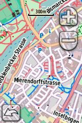
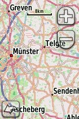
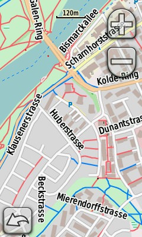

Maps of the Freizeitkarte project are intended for users of the Garmin BaseCamp (Mac, Win) application and owners of Garmin devices.

The market place in Heide (Holstein) is the biggest one (without buildings on it) in Germany.
These maps are provided for
- your leisure time
- and for outdoor activities.

|

|

|
The maps can be used in several ways, which can be combined as well:
- using a computer (OS X, Windows): Planning of Routes with BaseCamp
- as a map on paper: Print the map using BaseCamp
- on your GPS device: Outdoor navigation to your destination
Characteristics of the map
- Car drivers, cyclists and pedestrians are given the same importance
- Routing capabilities for car drivers and cyclists as well as for pedestrians
- Bus and train stops for users of public transport
- A lot of Points-Of-Interest (POI) are included on the map
- Most of these POIs are displayed discretely
- Only a few of these POIs regarding leisure time activities have an own symbol
- Topographical map with integrated contour lines (a line for every 25 meters in height)
|  | 
|

|
 |

|
 | 
|

|

|
For the Freizeitkarte maps the following applies:
- the publicly available and current data of the OpenStreetMap project is used
- the map representation is similar to the look & feel of the international OpenStreetMap, i.e. the maps and their interpretation is intuitive for OpenStreetMap-users
- Garmin BaseCamp features enhanced user experience, notable features are: routing for car navigation, index search, distance measurements, coordinate grid, printing capabilities, height profile, ...
- the map can be used on many Garmin devices
- the map is available for free and can be used without restrictions (q.v. terms of use)
- the map can be customized for individual purposes
- the map is updated frequently, usually every two month

IJmuiden (Netherlands) is located right at the entrance of the North Sea Canal, which connects the North Sea with the port of Amsterdam. At the lock chambers the so-called
Amsterdam's level is measured - from which the height "sea level" (NN) is derived.
Terms of use:
Usage of the map is at your own risk. The map or the routing functions may contain errors or may be insufficient. The creators of this map do not offer any guarantee or assume liability for any damages which are directly or indirectly connected to the usage of this map.